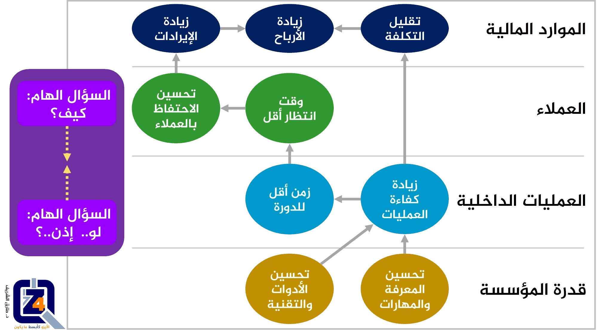

مرحبًا بكم في
موسوعة فور زد لاستشارات الجودة. مع ازدياد شدة التنافس في مجال الأعمال والخدمات، يتزايد الاهتمام بما يعرف بالتخطيط الإستراتيحي. لنتعرف أكثر عنه، والقيمة المضافة التي ستعود بالنفع لأي مؤسسة تطبق التخطيط الإستراتيجي بشكل محترف، تفضلوا بالبقاء معنا في هذا الشرح السريع.
ما المقصود بالتخطيط الإستراتيجي؟
- التخطيط الإستراتيجي هو نشاط إداري تنظيمي، يستخدم لتحديد الأولويات، وتركيز الطاقة والموارد، وتصميم العمليات، والتأكد من أن الموظفين وجميع المساهمين يعملون نحو أهداف مشتركة، وتثبيت التوافق حول النتائج / الأهداف المرجوة، وتقييم وتعديل إتجاه المؤسسة بالاستجابة للبيئة المحيطة المتغيرة.
- التخطيط الإستراتيجي هو جهد منظم، يؤدي إلى قرارات وإجراءات أساسية، تشكل وتوجه ماهية المؤسسة، ومن هم عملائها، وماذا تفعل، ولماذا تفعل ذلك، مع التركيز بالتأكيد على المستقبل.
- لا يوضح التخطيط الإستراتيجي الفعال فقط أين تتجه المؤسسة، والإجراءات اللازمة لإحراز تقدم ما، بل أيضًا ستعرف ما إذا كانت ستكون ناجحة.
ما هي الخطة الإستراتيجية؟
- الخطة الإستراتيجية هي وثيقة تستخدم للتواصل داخل المؤسسة، بأهداف المؤسسة، والإجراءات اللازمة لتحقيق تلك الأهداف، وجميع العناصر الهامة الأخرى التي تم تحديدها أثناء وضع الخطة.
ما هي الإدارة الإستراتيجية؟ ما هو تنفيذ الإستراتيجية؟
- الإدارة الإستراتيجية هي مجموعة شاملة من الأنشطة والعمليات الجارية، التي تستخدمها المؤسسات لتنسيق ومواءمة الموارد والإجراءات بشكل منهجي، مع المهمة، والرؤية، والإستراتيجية الخاصة بالمؤسسة.
- تعمل أنشطة الإدارة الإستراتيجية على تحويل الخطة النظرية، إلى نظام يوفر معلومات الأداء الإستراتيجي لصناع القرار، ويمكّن الخطة من التطور والنمو مع تغير المتطلبات والظروف الأخرى.
- تنفيذ الإستراتيجية هو في الأساس مرادف لإدارة الإستراتيجية ويعني التنفيذ المنهجي للإستراتيجية.
ما هي خطوات التخطيط الإستراتيجي والإدارة الإستراتيجية؟
- هناك العديد من الأطر والمنهجيات المختلفة للتخطيط الإستراتيجي والإدارة الإستراتيجية. بينما لا توجد قواعد ثابتة فيما يتعلق بالإطار المناسب، يتبع معظمهم نمطًا مشابهًا، ولهم سمات مشتركة.
- تدور العديد من الأطر حول بعض المراحل الأساسية:
- التحليل أو التقييم، يتم من خلالها فهم للبيئات الداخلية والخارجية الحالية للعمل؛
- صياغة الإستراتيجية، حيث يتم تطوير إستراتيجية عليا، ثم يتم توثيق خطة إستراتيجية أساسية على مستوى المؤسسة؛
- تنفيذ الإستراتيجية، هنا يتم ترجمة الخطة الإستراتيجية العليا إلى مزيد من التخطيط التشغيلي وبنود العمل، وأخيرًا؛
- مرحلة التقييم، أو الاستدامة/الإدارة، حيث يحدث صقل وتقييم مستمر للأداء، وثقافة العمل، والتواصل، ومسار التقارير، وقضايا الإدارة الإستراتيجية الأخرى.
ما هي خريطة العمل الإستراتيجية؟
- خريطة العمل الإستراتيجية عبارة عن رسم بياني بسيط، يُظهر الترابط المنطقي، وعلاقة السبب والنتيجة، بين الأهداف الإستراتيجية (تظهر على شكل أشكال بيضاوية على الخريطة).
- خريطة العمل الإستراتيجية هي واحدة من أقوى الأدوات الإدارية، حيث يتم استخدامها للتعبير بشكل سريع، عن كيفية خلق القيمة المضافة من قبل المؤسسة.
- يمكن أن تؤدي خريطة العمل الإستراتيجية إلى تحسين عملية توصيل الفكر الإستراتيجي بشكل كبير في جميع أنحاء المؤسسة. لأن معظم الناس يتعلمون أفضل بالوسائل البصرية، وبالتالي فإن مجرد صورة لإستراتيجيتك، سيفهمها العديد من الموظفين أكثر من أي سرد مكتوب.
- بالإضافة إلى ذلك، فإن عملية تطوير خريطة العمل الإستراتيجية تلزم فريق العمل على التوافق على ما يحاولون تحقيقه بعبارات بسيطة وسهلة الفهم. من خلال خريطة عمل إستراتيجية جيدة التصميم، واضحة المعالم، يمكن لكل موظف معرفة كيفية مساهمته في تحقيق أهداف المؤسسة.

مثال على الخريطة الإستراتيجية.
إذا كنتم مهتمين بمعرفة المزيد حول
التخطيط الإستراتيجي، أو كيف يمكن أن يساعدكم التخطيط الإستراتيجي في تحسين أداء وفاعلية عملكم،
يمكنكم التواصل معنا، بإرسال بريدًا إلكترونيًا على العنوان التالي:
support@the4z.com. التخطيط الإستراتيجي ليس بالأمر الصعب. ولكن إذا بدا لكم معقدًا بعض الشيء، فنحن نعدكم بجعله سهلاً.
أو الاتصال اليوم بشركة فور زد للجــودة على رقم (أيضًا واتساب):
0097333995807 أو
00905050304016.